<script src="https://ajax.googleapis.com/ajax/libs/jquery/3.6.1/jquery.min.js"></script>
<script>
  $(document).ready(function() {

// Check for click events on the navbar burger icon
    $(".navbar-burger").click(function() {

// Toggle the "is-active" class on both the "navbar-burger" and the "navbar-menu"
      $(".navbar-burger").toggleClass("is-active");
      $(".navbar-menu").toggleClass("is-active");

    });
  });
</script>
<section>
  <nav class="navbar" role="navigation" aria-label="main navigation">
    <div class="navbar-brand">
      <a class="navbar-item">
        
      </a>
      <span class="navbar-item sleepy">SLEEPY TURTLE</span>
      <a role="button" class="navbar-burger" aria-label="menu" aria-expanded="false" data-target="navbarBasicExample">
        <span aria-hidden="true"></span>
        <span aria-hidden="true"></span>
        <span aria-hidden="true"></span>
      </a>
    </div>

    <div class="navbar-menu">
      <div class="navbar-start">
        <a class="navbar-item" href="index.html">
          Home
        </a>
        <a class="navbar-item" href="facts.html">
          Fakten
        </a>
        <a class="navbar-item" href="tipps.html">
          Tipps & Tricks
        </a>
        <a class="navbar-item" href="neurobio.html">
          Neurobiologie
        </a>
      </div>
    </div>
  </nav>
</section>